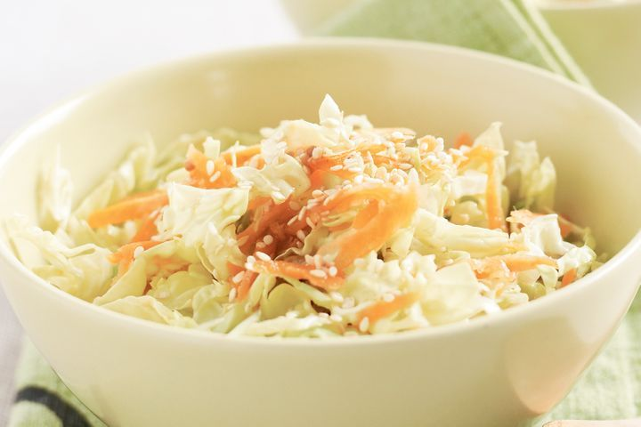

easy and affordable recipes for the average broke uni student
What makes a salad, a salad? Can you just toss any number of random ingredients together and call it a day? From the brief research I did, yes. Yes, you can. There seems to be a variety of different salads out there, ranging from your typical caesar to more complicated grain and pasta salads. You can even make fruit salad! Just like the Wiggles did in the ‘90s. Heck, some people will even mix together whipped topping, canned fruit, marshmallows, and call it a salad (if this sounds like something you’d be into for some reason, check out this Ambrosia Salad Recipe).
I personally prefer my salads with no marshmallows or whipped topping. Try this simple Cabbage Salad that’s sure to be a yummy palate-cleanser during your four-course meal!
1. Shred your cabbage and carrot into thin slices (you can use a box grater, food processor, or sharp knife). Thinly slice your scallion as well.
2. (Optional) soak veggies in ice water for 20 min to get everything super, then drain and dry off excess moisture.
3. Drizzle some sesame dressing on top and voila! Crunchy, yummy cabbage salad in no time.
cabbage
carrot
scallion
sesame dressing (you can find some at your local grocery store)
SAY HI :)